6. conectar todos los cables internos y asegurarse de que estén TODOS CONECTADOS.
1. Alinear el ATX de 20 pines del cable de alimentación a la toma de la placa base y presionar suavemente hacia abajo para asegurar la conexión.
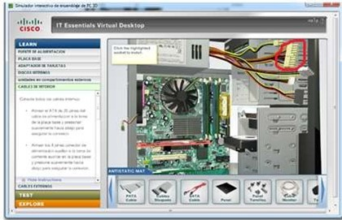
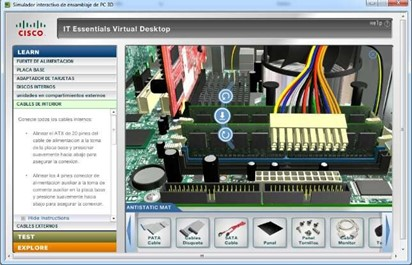
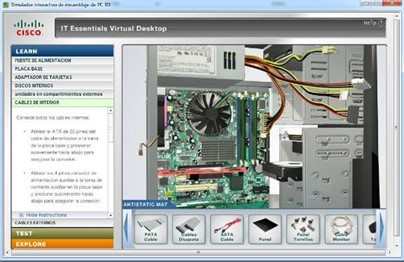
2. Alinear los 4 pines conector de alimentación auxiliar a la toma de corriente auxiliar en la placa base y presione suavemente hacia abajo para asegurar la conexión

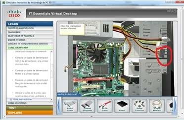
3. Conecte el cable de alimentación SATA a la unidad de disco duro.
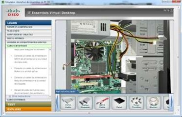
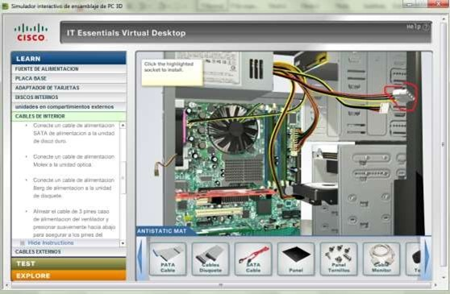
4. Conectar el cable de alimentación Molex a la unidad óptica.
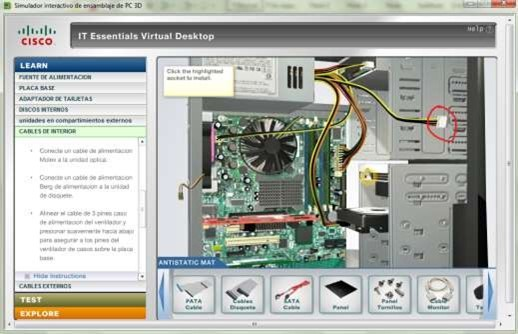
5. Conectar el cable de alimentación Berg de a la unidad de disquete.
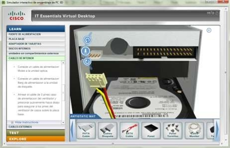
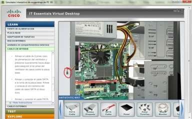
6. Alinear el cable de 3 pines de alimentación del ventilador y presionar suavemente hacia abajo para asegurar los pines del ventilador sobre la placa base.
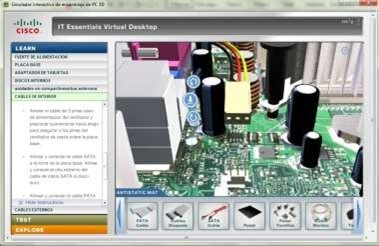
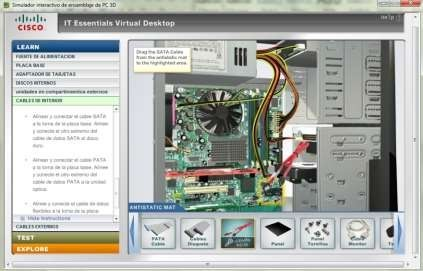
7. conectar el cable SATA a la toma de la placa base alinear y conectar el otro extremo al disco duro.
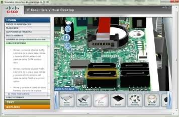
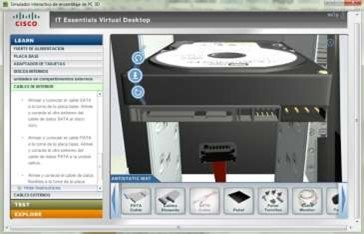
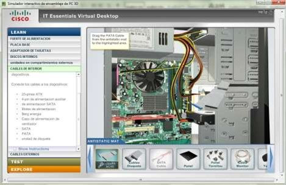
8. alinear y conectar el cable pata a la toma de la placa base luego alinear y conectar el otro extremo a la unidad óptica.
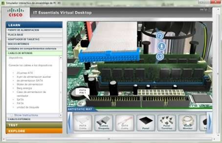
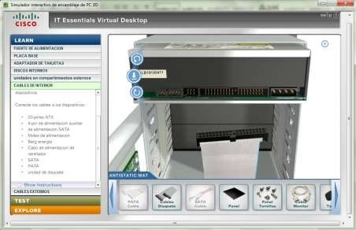
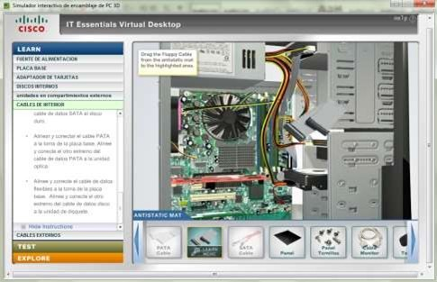
9. conectar el cable de datos flexible (cable IDE) a la toma de la placa base y conectar el otro extremo a la unidad de disquete.
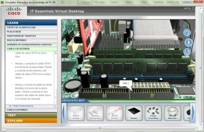
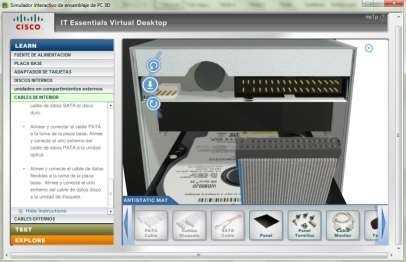
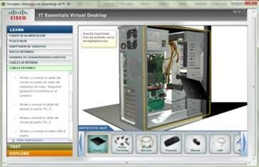